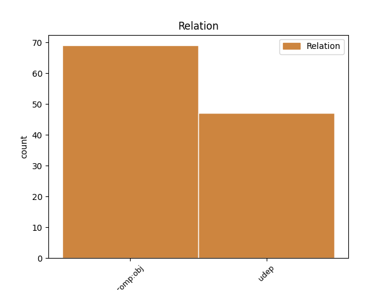
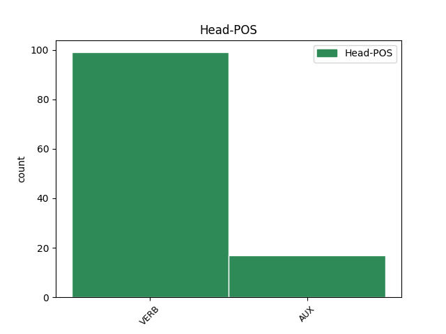
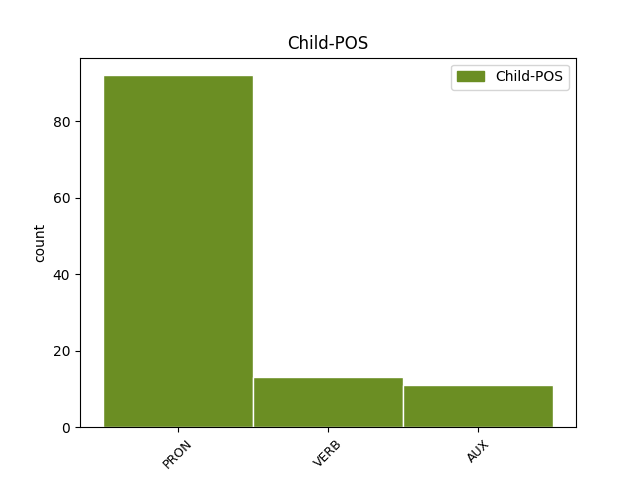

Distribution of features within this leaf



Agreement Rules sorted by frequency.
- When the dependent token is the direct object complements(comp:obj) of the head token,
1 Jedan _ _ _ _ 0 _ _ _
2 od _ _ _ _ 0 _ _ _
3 pionirskih _ _ _ _ 0 _ _ _
4 koraka _ _ _ _ 0 _ _ _
5 na _ _ _ _ 0 _ _ _
6 putu _ _ _ _ 0 _ _ _
7 ka _ _ _ _ 0 _ _ _
8 Internetu _ _ _ _ 0 _ _ _
9 stvari _ _ _ _ 0 _ _ _
10 napravljen _ _ _ _ 0 _ _ _
11 je _ _ _ _ 0 _ _ _
12 još _ _ _ _ 0 _ _ _
13 davne _ _ _ _ 0 _ _ _
14 1982. _ _ _ _ 0 _ _ _
15 kada _ _ _ _ 0 _ _ _
16 je _ _ _ _ 0 _ _ _
17 na _ _ _ _ 0 _ _ _
18 Karnegi _ _ _ _ 0 _ _ _
19 univerzitetu _ _ _ _ 0 _ _ _
20 u _ _ _ _ 0 _ _ _
21 Pensilvaniji _ _ _ _ 0 _ _ _
22 uspešno _ _ _ _ 0 _ _ _
23 umrežen _ _ _ _ 0 _ _ _
24 automat _ _ _ _ 0 _ _ _
25 za _ _ _ _ 0 _ _ _
26 koka-kolu _ _ _ _ 0 _ _ _
27 sa _ _ _ _ 0 _ _ _
28 kompjuterima _ _ _ _ 0 _ _ _
29 univerziteta _ _ _ _ 0 _ _ _
30 tako _ _ _ _ 0 _ _ _
31 da _ _ _ _ 0 _ _ _
32 je _ _ _ _ 0 _ _ _
33 svaki _ _ _ _ 0 _ _ _
34 zaposleni _ _ _ _ 0 _ _ _
35 mogao _ _ _ _ 0 _ _ _
36 da _ _ _ _ 0 _ _ _
37 vidi videti VERB Vmr3s Mood=Ind|Number=Sing|Person=3|Tense=Pres|VerbForm=Fin 0 _ _ _
38 preko _ _ _ _ 0 _ _ _
39 računara _ _ _ _ 0 _ _ _
40 koje _ _ _ _ 0 _ _ _
41 dugme _ _ _ _ 0 _ _ _
42 na _ _ _ _ 0 _ _ _
43 automatu _ _ _ _ 0 _ _ _
44 treba trebati VERB Vmr3s Mood=Ind|Number=Sing|Person=3|Tense=Pres|VerbForm=Fin 37 comp:obj _ _
45 pritisnuti _ _ _ _ 0 _ _ _
46 da _ _ _ _ 0 _ _ _
47 bi _ _ _ _ 0 _ _ _
48 se _ _ _ _ 0 _ _ _
49 dobila _ _ _ _ 0 _ _ _
50 najrashlađenija _ _ _ _ 0 _ _ _
51 boca _ _ _ _ 0 _ _ _
52 u _ _ _ _ 0 _ _ _
53 mašini _ _ _ _ 0 _ _ _
54 . _ _ _ _ 0 _ _ _
1 Hilova _ _ _ _ 0 _ _ _
2 je _ _ _ _ 0 _ _ _
3 uspela _ _ _ _ 0 _ _ _
4 ne _ _ _ _ 0 _ _ _
5 samo _ _ _ _ 0 _ _ _
6 da _ _ _ _ 0 _ _ _
7 im oni PRON Pp3-pd Case=Dat|Number=Plur|Person=3|PronType=Prs 8 udep _ _
8 pali paliti VERB Vmr3s Mood=Ind|Number=Sing|Person=3|Tense=Pres|VerbForm=Fin 0 _ _ _
9 i _ _ _ _ 0 _ _ _
10 gasi _ _ _ _ 0 _ _ _
11 pametna _ _ _ _ 0 _ _ _
12 svetla _ _ _ _ 0 _ _ _
13 u _ _ _ _ 0 _ _ _
14 kući _ _ _ _ 0 _ _ _
15 , _ _ _ _ 0 _ _ _
16 već _ _ _ _ 0 _ _ _
17 i _ _ _ _ 0 _ _ _
18 da _ _ _ _ 0 _ _ _
19 preuzme _ _ _ _ 0 _ _ _
20 kontrolu _ _ _ _ 0 _ _ _
21 nad _ _ _ _ 0 _ _ _
22 pametnim _ _ _ _ 0 _ _ _
23 vratima _ _ _ _ 0 _ _ _
24 njihove _ _ _ _ 0 _ _ _
25 garaže _ _ _ _ 0 _ _ _
26 , _ _ _ _ 0 _ _ _
27 kamerama _ _ _ _ 0 _ _ _
28 za _ _ _ _ 0 _ _ _
29 nadzor _ _ _ _ 0 _ _ _
30 , _ _ _ _ 0 _ _ _
31 pa _ _ _ _ 0 _ _ _
32 čak _ _ _ _ 0 _ _ _
33 i _ _ _ _ 0 _ _ _
34 televizorom _ _ _ _ 0 _ _ _
35 . _ _ _ _ 0 _ _ _
Disagree Examples:
1 Zbog _ _ _ _ 0 _ _ _
2 tih _ _ _ _ 0 _ _ _
3 koraka _ _ _ _ 0 _ _ _
4 ga on PRON Pp3msa Case=Acc|Gender=Masc|Number=Sing|Person=3|PronType=Prs 7 comp:obj _ _
5 još _ _ _ _ 0 _ _ _
6 snažnije _ _ _ _ 0 _ _ _
7 podržavam podržavati VERB Vmr1s Mood=Ind|Number=Sing|Person=1|Tense=Pres|VerbForm=Fin 0 _ _ _
8 " _ _ _ _ 0 _ _ _
9 , _ _ _ _ 0 _ _ _
10 rekao _ _ _ _ 0 _ _ _
11 je _ _ _ _ 0 _ _ _
12 stanovnik _ _ _ _ 0 _ _ _
13 Tuzle _ _ _ _ 0 _ _ _
14 Ivica _ _ _ _ 0 _ _ _
15 Tomić _ _ _ _ 0 _ _ _
16 za _ _ _ _ 0 _ _ _
17 SETimes _ _ _ _ 0 _ _ _
18 . _ _ _ _ 0 _ _ _
1 On _ _ _ _ 0 _ _ _
2 je _ _ _ _ 0 _ _ _
3 predodređen _ _ _ _ 0 _ _ _
4 da _ _ _ _ 0 _ _ _
5 nam mi PRON Pp1-pd Case=Dat|Number=Plur|Person=1|PronType=Prs 6 udep _ _
6 ponudi ponuditi VERB Vmr3s Mood=Ind|Number=Sing|Person=3|Tense=Pres|VerbForm=Fin 0 _ _ _
7 sve _ _ _ _ 0 _ _ _
8 svoje _ _ _ _ 0 _ _ _
9 znanje _ _ _ _ 0 _ _ _
10 i _ _ _ _ 0 _ _ _
11 stručnost _ _ _ _ 0 _ _ _
12 u _ _ _ _ 0 _ _ _
13 pogledu _ _ _ _ 0 _ _ _
14 pravde _ _ _ _ 0 _ _ _
15 za _ _ _ _ 0 _ _ _
16 ljudska _ _ _ _ 0 _ _ _
17 prava _ _ _ _ 0 _ _ _
18 " _ _ _ _ 0 _ _ _
19 , _ _ _ _ 0 _ _ _
20 rekao _ _ _ _ 0 _ _ _
21 je _ _ _ _ 0 _ _ _
22 Efrim _ _ _ _ 0 _ _ _
23 za _ _ _ _ 0 _ _ _
24 SETimes _ _ _ _ 0 _ _ _
25 . _ _ _ _ 0 _ _ _
1 Meni ja PRON Pp1-sd Case=Dat|Number=Sing|Person=1|PronType=Prs 3 udep _ _
2 se _ _ _ _ 0 _ _ _
3 čini činiti VERB Vmr3s Mood=Ind|Number=Sing|Person=3|Tense=Pres|VerbForm=Fin 0 _ _ _
4 da _ _ _ _ 0 _ _ _
5 je _ _ _ _ 0 _ _ _
6 to _ _ _ _ 0 _ _ _
7 važno _ _ _ _ 0 _ _ _
8 . _ _ _ _ 0 _ _ _
1 Kada _ _ _ _ 0 _ _ _
2 su _ _ _ _ 0 _ _ _
3 u _ _ _ _ 0 _ _ _
4 pitanju _ _ _ _ 0 _ _ _
5 kritike _ _ _ _ 0 _ _ _
6 koje _ _ _ _ 0 _ _ _
7 sada _ _ _ _ 0 _ _ _
8 iznose _ _ _ _ 0 _ _ _
9 profesorske _ _ _ _ 0 _ _ _
10 unije _ _ _ _ 0 _ _ _
11 , _ _ _ _ 0 _ _ _
12 on _ _ _ _ 0 _ _ _
13 kaže _ _ _ _ 0 _ _ _
14 : _ _ _ _ 0 _ _ _
15 " _ _ _ _ 0 _ _ _
16 Trenutno _ _ _ _ 0 _ _ _
17 širom _ _ _ _ 0 _ _ _
18 sveta _ _ _ _ 0 _ _ _
19 postoji _ _ _ _ 0 _ _ _
20 65.000 _ _ _ _ 0 _ _ _
21 grčkih _ _ _ _ 0 _ _ _
22 univerzitetskih _ _ _ _ 0 _ _ _
23 studenata _ _ _ _ 0 _ _ _
24 , _ _ _ _ 0 _ _ _
25 a _ _ _ _ 0 _ _ _
26 većina _ _ _ _ 0 _ _ _
27 je _ _ _ _ 0 _ _ _
28 upisana _ _ _ _ 0 _ _ _
29 u _ _ _ _ 0 _ _ _
30 sisteme _ _ _ _ 0 _ _ _
31 poput _ _ _ _ 0 _ _ _
32 onog _ _ _ _ 0 _ _ _
33 koji _ _ _ _ 0 _ _ _
34 trenutna _ _ _ _ 0 _ _ _
35 vlada _ _ _ _ 0 _ _ _
36 želi _ _ _ _ 0 _ _ _
37 da _ _ _ _ 0 _ _ _
38 uspostavi _ _ _ _ 0 _ _ _
39 , _ _ _ _ 0 _ _ _
40 a _ _ _ _ 0 _ _ _
41 opet _ _ _ _ 0 _ _ _
42 je _ _ _ _ 0 _ _ _
43 veći _ _ _ _ 0 _ _ _
44 deo _ _ _ _ 0 _ _ _
45 akademske _ _ _ _ 0 _ _ _
46 zajednice _ _ _ _ 0 _ _ _
47 ovde _ _ _ _ 0 _ _ _
48 protiv _ _ _ _ 0 _ _ _
49 toga _ _ _ _ 0 _ _ _
50 … _ _ _ _ 0 _ _ _
51 većina _ _ _ _ 0 _ _ _
52 ljudi _ _ _ _ 0 _ _ _
53 u _ _ _ _ 0 _ _ _
54 zemlji _ _ _ _ 0 _ _ _
55 je _ _ _ _ 0 _ _ _
56 razborita _ _ _ _ 0 _ _ _
57 i _ _ _ _ 0 _ _ _
58 zdravog _ _ _ _ 0 _ _ _
59 je _ _ _ _ 0 _ _ _
60 razuma _ _ _ _ 0 _ _ _
61 , _ _ _ _ 0 _ _ _
62 ali _ _ _ _ 0 _ _ _
63 vodi voditi VERB Vmr3s Mood=Ind|Number=Sing|Person=3|Tense=Pres|VerbForm=Fin 0 _ _ _
64 nas mi PRON Pp1-pa Case=Acc|Number=Plur|Person=1|PronType=Prs 63 comp:obj _ _
65 manjina _ _ _ _ 0 _ _ _
66 ; _ _ _ _ 0 _ _ _
67 ista _ _ _ _ 0 _ _ _
68 je _ _ _ _ 0 _ _ _
69 [ _ _ _ _ 0 _ _ _
70 situacija _ _ _ _ 0 _ _ _
71 ] _ _ _ _ 0 _ _ _
72 na _ _ _ _ 0 _ _ _
73 univerzitetima _ _ _ _ 0 _ _ _
74 . _ _ _ _ 0 _ _ _
75 " _ _ _ _ 0 _ _ _
1 " _ _ _ _ 0 _ _ _
2 Mene ja PRON Pp1-sa Case=Acc|Number=Sing|Person=1|PronType=Prs 3 comp:obj _ _
3 zanima zanimati VERB Vmr3s Mood=Ind|Number=Sing|Person=3|Tense=Pres|VerbForm=Fin 0 _ _ _
4 stepen _ _ _ _ 0 _ _ _
5 savršenosti _ _ _ _ 0 _ _ _
6 mojih _ _ _ _ 0 _ _ _
7 objekata _ _ _ _ 0 _ _ _
8 i _ _ _ _ 0 _ _ _
9 svojstveno _ _ _ _ 0 _ _ _
10 uklapanje _ _ _ _ 0 _ _ _
11 arhitekture _ _ _ _ 0 _ _ _
12 s _ _ _ _ 0 _ _ _
13 početka _ _ _ _ 0 _ _ _
14 21. _ _ _ _ 0 _ _ _
15 veka _ _ _ _ 0 _ _ _
16 . _ _ _ _ 0 _ _ _
17 " _ _ _ _ 0 _ _ _